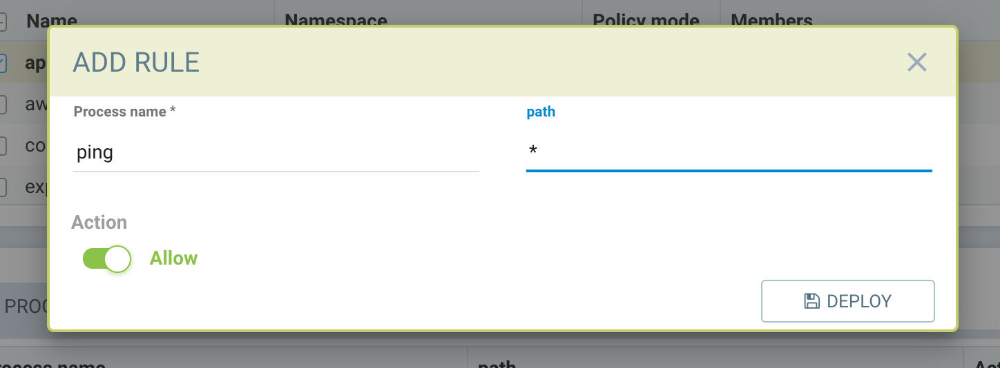
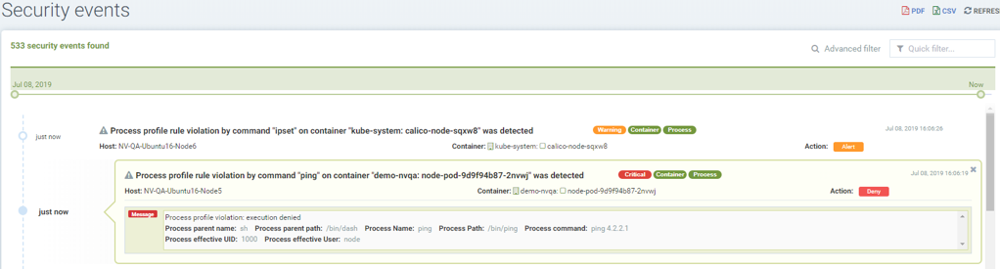

Regras de Arquivo de Controle de Processo
Política → Grupos → Regras de Arquivo de Controle de Processo
Existem dois tipos de proteções de processo/arquivo em SUSE® Security. Uma é a Zero-drift, onde a atividade permitida de processo e arquivo é automaticamente determinada com base na imagem do contêiner, e a segunda é baseada em aprendizado comportamental. Cada uma pode ser personalizada (regras adicionadas manualmente) se desejado.
|
Há uma limitação ao rodar em sistemas com o sistema de arquivos AUFS, onde pode ocorrer uma condição de corrida e as regras de processo não são aplicadas para bloqueio (Modo de Proteção). No entanto, essas violações ainda são relatadas nos logs de eventos de segurança. |
Proteção de Processo Zero-drift
Este é o modo padrão para proteções de processo e arquivo. Zero-drift permite automaticamente apenas processos que se originam do processo pai que está na imagem original do contêiner, e não permite atualizações de arquivos ou a instalação de novos arquivos. Quando em modo Descobrir ou Monitorar, o zero-drift alertará sobre qualquer atividade suspeita de processo ou arquivo. No modo de Proteção, ele bloqueará tal atividade. Zero-drift não requer que processos sejam aprendidos ou adicionados a uma lista de permissões. Desabilitar o zero-drift para um grupo fará com que as regras de processo e arquivo listadas para o grupo entrem em vigor em vez disso.
|
(1) As regras de processo/arquivo listadas para cada grupo são sempre aplicadas, mesmo quando o zero-drift está habilitado. Isso oferece uma maneira de adicionar exceções de permitir/negar às proteções básicas de zero-drift. Tenha em mente que se um grupo começar em modo Descobrir, regras de processo/arquivo podem ser adicionadas automaticamente à lista, e devem ser revisadas e editadas antes de passar para os modos Monitorar/Proteger. (2) É recomendado definir namespaces confiáveis pelo sistema (de fato) (sistema e plugin de rede) como proteção BÁSICA. Os namespaces de exemplo a serem configurados são "kube-system", "openshift-ovn-kubernetes", "ovn-*" etc. Defina outros pods de aplicativo como zero-drift. |
A capacidade de habilitar/desabilitar o modo zero-drift está no console em Política → Grupos. Vários grupos podem ser selecionados para alternar essa configuração para todos os grupos selecionados.
Proteção de Processo em Modo Básico
O zero-drift pode ser desabilitado, mudando para a proteção de processo básica. A proteção básica impõe a atividade de processo/arquivo com base nas regras de processo e/ou arquivo listadas para cada Grupo. Isso significa que deve haver uma lista de regras de processo e/ou regras de arquivo em vigor para que a proteção ocorra. As regras podem ser criadas automaticamente através do Aprendizado Comportamental enquanto estiver no modo Descobrir, criadas manualmente através do console ou API REST, ou criadas programaticamente aplicando um CRD. Com o Básico habilitado, se não houver regras em vigor, toda atividade será alertada/bloqueada enquanto estiver nos modos Monitorar ou Proteger.
Proteção de processo baseada em aprendizado comportamental
As regras de arquivo de controle de processo utilizam o aprendizado de base para definir o perfil dos processos que devem ser permitidos a serem executados em um grupo de contêineres (ou seja, um Grupo). Em condições normais em um ambiente de microserviços, para contêineres com uma imagem particular, apenas um conjunto limitado de processos por usuários específicos seria executado. Se o contêiner for atacado, o atacante malicioso provavelmente iniciaria alguns novos programas que normalmente não são vistos neste contêiner. Esses eventos anormais podem ser detectados por SUSE® Security e alertas e ações gerados (veja também Regras de Resposta).
As informações de base do processo serão aprendidas e registradas quando o Grupo de serviço estiver no modo de aprendizagem. Quando estiver nos modos Monitorar ou Proteger, se um processo que não foi visto antes for iniciado, ou um processo antigo for iniciado por um usuário diferente do anterior, o evento será detectado e alertado como um processo suspeito no modo Monitorar ou alertado e bloqueado no modo Proteger. Os usuários podem modificar o arquivo de controle aprendido para permitir ou negar (lista branca ou lista negra) processos manualmente, se necessário.
Observe que, além dos processos de base, SUSE® Security possui detecção incorporada de processos suspeitos comuns, como nmap, shell reverso etc. Esses serão detectados e alertados/bloqueados, a menos que explicitamente incluídos na lista branca para cada serviço de contêiner.
|
As sondas de liveness do Kubernetes são automaticamente permitidas e adicionadas às regras de processo aprendidas, mesmo no modo Monitor/Proteger. |
Regras de processo para Nós
O grupo reservado especial 'nós' pode ser configurado para impor regras de arquivo de controle de processo em cada nó (host) no cluster. Selecione o grupo 'nós' e revise as regras de processo, editando se necessário. Em seguida, altere o modo de proteção para Monitorar ou Proteger. A lista de regras de processo 'local' (aprendida) é uma combinação de todos os processos de todos os nós no cluster enquanto está no modo Descobrir.
Regras de processo para Grupos Personalizados
Para Grupos personalizados definidos pelo usuário, as regras de processo, se desejadas, devem ser adicionadas manualmente. Grupos personalizados não aprendem regras de processo automaticamente.
Precedência das regras de processo
Regras de processo podem existir para Grupos personalizados definidos pelo usuário, bem como para Grupos aprendidos automaticamente. Regras criadas para Grupos personalizados têm precedência sobre regras para Grupos aprendidos automaticamente.
Para a lista de regras de processo dentro de qualquer Grupo, a ordem das regras no console determina sua precedência. As regras listadas no topo são correspondidas primeiro antes das que estão abaixo.
Regras de processo com nome e caminho contendo curingas têm precedência sobre outras regras para a ação Permitir. Uma ação Negar não é permitida com ambos os curingas para evitar bloquear todos os processos.
Regras de processo com uma ação Negar e curinga no nome terão precedência sobre ações Permitir com curinga no nome.
Modo de aprendizagem
-
Todos os novos processos são perfilados com a ação permitir.
-
Os usuários podem alterar a ação para 'negar' para gerar alerta ou bloquear quando o mesmo novo processo é iniciado.
-
Os usuários podem criar um arquivo de controle para um processo com permissão ou negação.
-
As regras do arquivo de controle do processo podem conter nome e/ou caminho.
-
O caractere curinga * pode ser usado para corresponder a todos os nomes ou caminhos.
|
Um processo suspeito (detecção incorporada), como nmap, ncat, etc., é relatado como um evento de processo suspeito e NÃO será aprendido. Se um serviço precisar desse processo, ele deve ser adicionado com uma regra de arquivo de controle de 'permissão' explicitamente. |
Modo Monitorar/Proteger (novo contêiner iniciado em modo monitorar ou proteger)
-
Todo novo processo gera um alerta
-
As regras do arquivo de controle do processo podem conter nome e/ou caminho
-
O caractere curinga * pode ser usado para corresponder a todos os nomes ou caminhos
Se a) o processo corresponder a uma regra de negação, ou b) o processo não estiver na lista de regras de permissão, então:
-
No modo Monitorar, alertas serão gerados
-
No modo Proteger, os processos serão bloqueados e alertas gerados
|
Plataformas de contêiner com o driver de armazenamento AUFS introduzirão um atraso no mecanismo de bloqueio devido às limitações do driver. |
|
No modo Proteger, contêineres do sistema, como os do Kubernetes, não habilitarão a ação de bloqueio, mas gerarão um evento de violação de processo se houver uma violação de processo. |
Criando regras de arquivo de controle de processo.
Múltiplas regras podem ser criadas para o mesmo processo. As regras são executadas sequencialmente e a primeira regra correspondente será executada.
-
Clique em Adicionar regra (+) na aba de regras do arquivo de controle do processo.
-
As regras do arquivo de controle do processo podem conter nome e/ou caminho.
-
O caractere curinga * pode ser usado para corresponder a todos os nomes ou caminhos.
Exemplo: Para permitir que o processo ping seja executado de qualquer diretório

As violações serão registradas em Notificações → Eventos de Segurança.

Detecção de Processos Suspeitos Integrada
As seguintes detecções integradas estão habilitadas automaticamente em SUSE® Security.
| Processo | Direção | Nome reportado |
|---|---|---|
nmap |
enviados |
scanner de portas |
nc |
enviados |
processo netcat |
ncat |
enviados |
processo netcat |
netcat |
enviados |
processo netcat |
sshd |
recebidos |
ssh de remoto |
ssh |
enviados |
ssh para remoto |
scp |
enviados |
cópia segura |
telnet |
enviados |
telnet para remoto |
in.telnetd |
recebidos |
telnet de remoto |
iodine |
enviados |
túnel DNS |
iodined |
recebidos |
túnel DNS |
dnscat |
enviados |
túnel DNS |
dns2tcpc |
enviados |
túnel DNS |
dns2tcpd |
recebidos |
túnel DNS |
socat |
enviados |
processo de retransmissão |
Além disso, as seguintes detecções estão habilitadas:
-
docker cp
-
elevação de privilégio de root (papel de usuário para papel de root)
-
túnel: shell reverso (ativado quando stdin e stdout são redirecionados para o mesmo socket)
Processos suspeitos são alertados quando em modo Descobrir ou Monitorar, e bloqueados quando em modo Proteger. A detecção se aplica a contêineres, bem como a hosts, com a exceção do 'sshd', que não é considerado suspeito em hosts. Os processos listados acima podem ser adicionados à Lista de Permissão para contêineres (Grupos), inclusive para hosts, se for permitido.
Proteções de Processo/Arquivo em Modo Dividido
Grupos de contêineres podem ter regras de Processo/Arquivo em um modo diferente das regras de Rede, conforme descrito aqui.